アクセス
JR武蔵野線 新八柱駅を出て、京成松戸線八柱駅の方面へ向かう
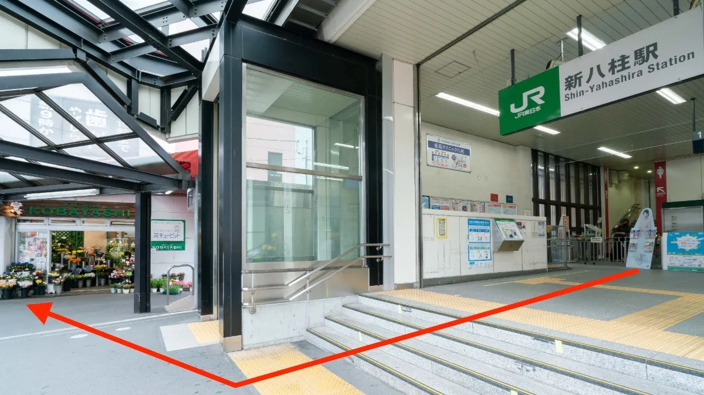
花屋さんの横を直進します。
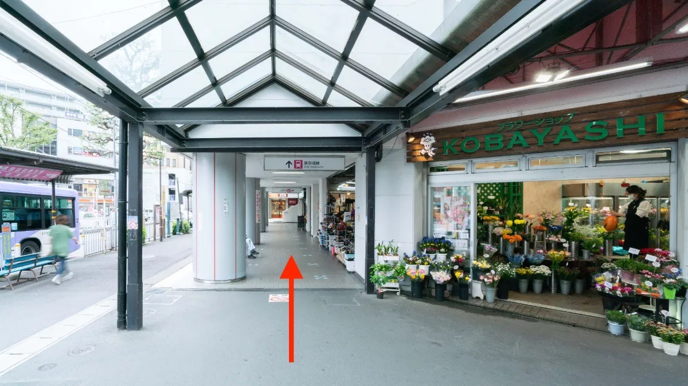
徒歩1分ほどで京成松戸線八柱駅に着きますので改札階までエスカレーターまたは階段にてお上がりください。 ※隣のビル内にエレベーターもございます。
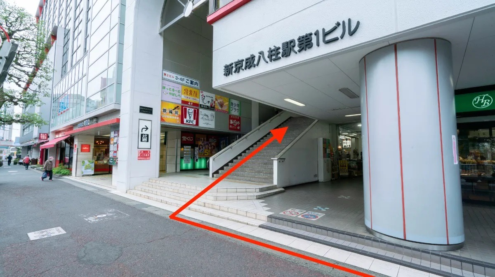
階段を登ると京成松戸線八柱駅の改札がありますので、改札を背にして左手にお進みください。
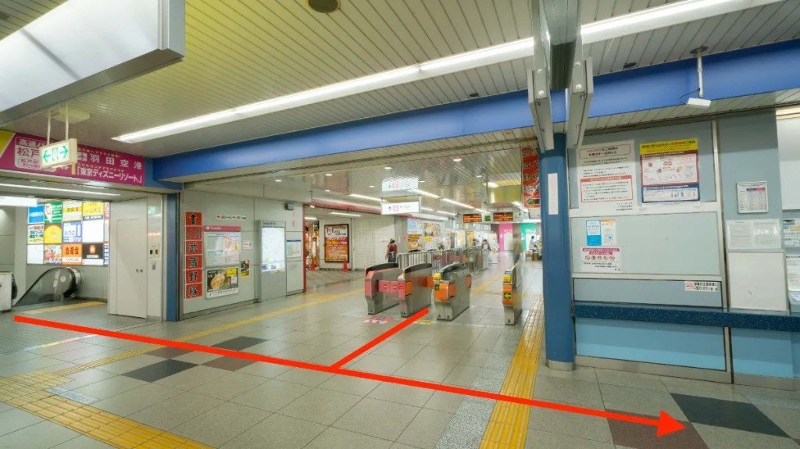
反対口には階段とエレベーターがございますのでどちらかで降りてください。
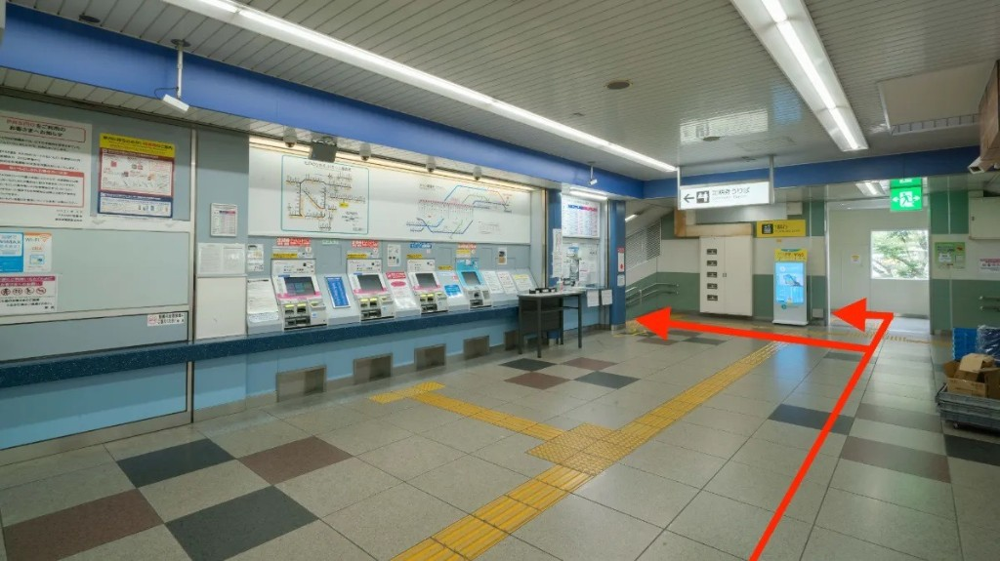
階段をおりましたらそのまま道なりにお進みください。
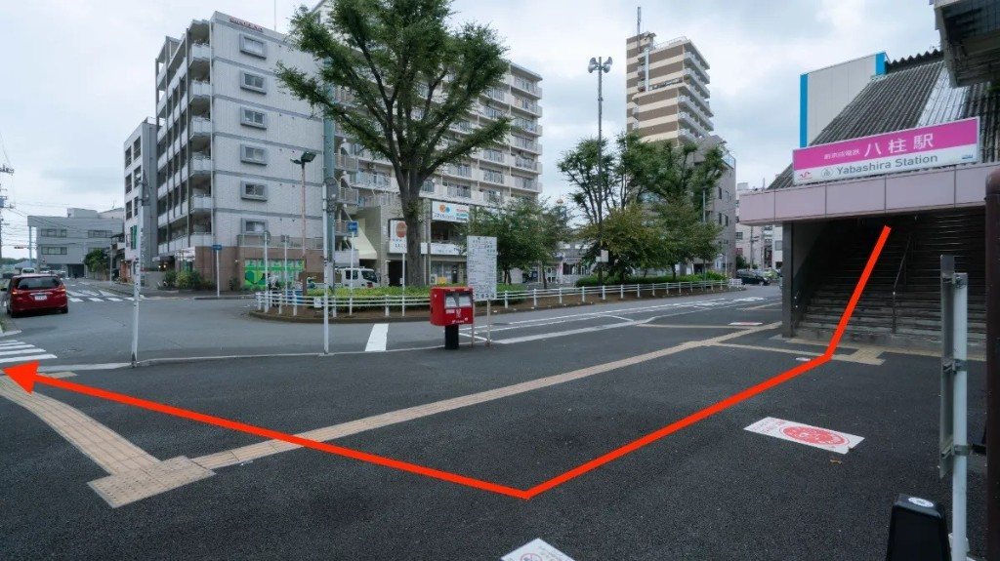
左手に牛角と赤いビルがございますので、その間の路地をお進みください。
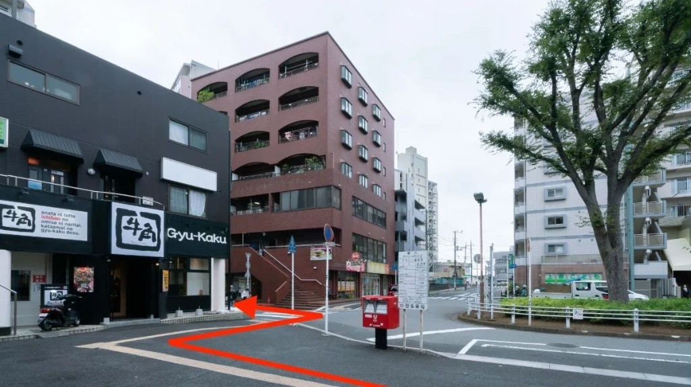
60mほど直進をお願いします。
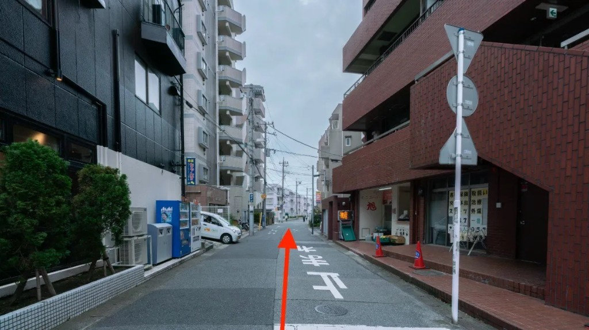
直進ののち1本目の路地を右に曲がります。
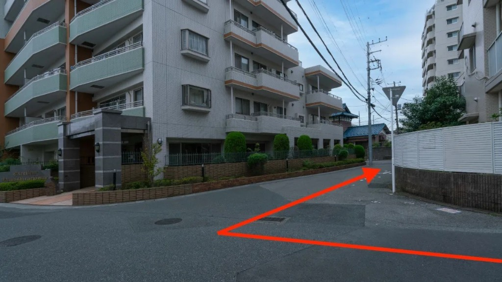
当院のビルはこちらのビルとなります。
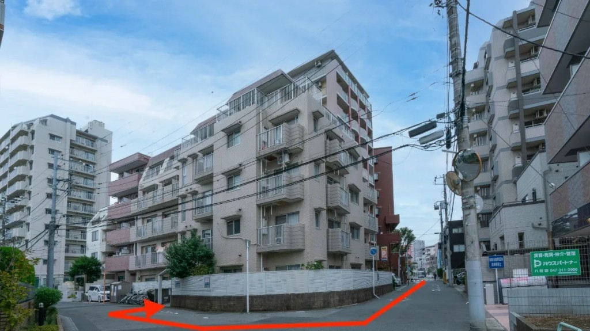
正面入り口からお入りください。
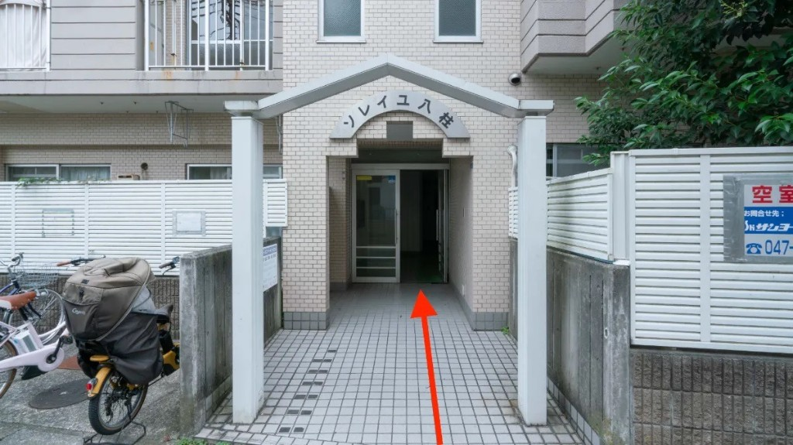
入り口すぐにエレベーターホールがございますので、エレベーターにて4階へお越しください。
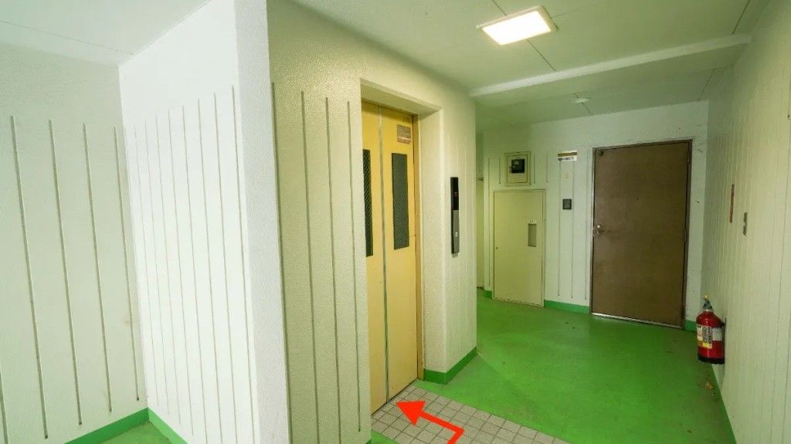
4階のエレベーターを降りたら、403号室が「健康庵 日々樹」となります。インターホンを押してお入りください。 ※当院は看板を設置しておりませんのでご了承ください。
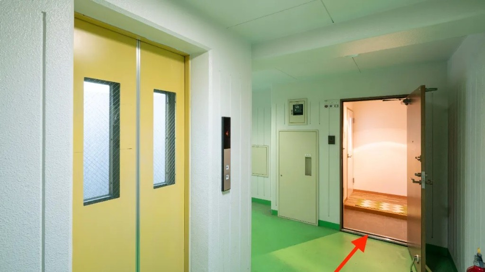
京成松戸線八柱駅の改札を背にして左手にお進みください。
階段とエレベーターがございますのでどちらかで降りてください。
階段をおりましたらそのまま道なりにお進みください。
左手に牛角と赤いビルがございますので、その間の路地をお進みください。
100mほど直進をお願いします。
直進ののち1本目の路地を右に曲がります。
当院のビルはこちらのビルとなります。
正面入り口からお入りください。
入り口すぐにエレベーターホールがございますので、エレベーターにて4階へお越しください。
4階のエレベーターを降りたら、403号室が「健康庵 日々樹」となります。インターホンを押してお入りください。 ※当院は看板を設置しておりませんのでご了承ください。